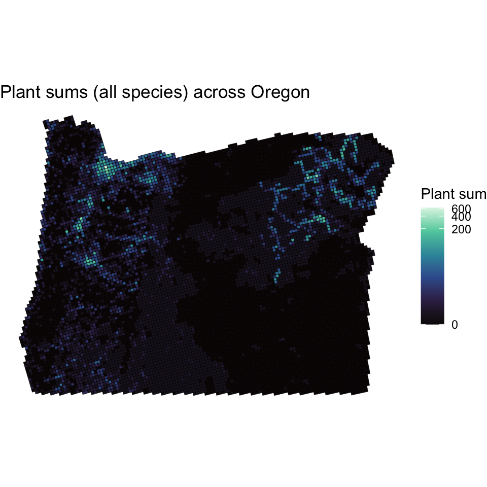
Oregon on Fire
Wildfire Severity, Prescribed Burns, and Species Distribution Across Indigenous and Non-Indigenous Oregon Lands
1 Title, Team, and Affiliations
Project title: Oregon on Fire: Wildfire Severity, Prescribed Burns, and Species Distribution Across Indigenous and Non-Indigenous Oregon Lands
| Name | Role | Willamette email |
|---|---|---|
| Spencer Fiden | Owner Product Lead | nefiden@willamette.edu |
| Amaya Supancich-McCord | Owner Product Lead | asupancichmccord@willamette.edu |
Peer Stakeholder POs: Siera Edwards, Brooke Proctor, Serenna Walter (Shared Theme: Pacific Northwest forest and environmental health.)
Repository: https://github.com/Fiden-Supancich-McCord/data510-fire/tree/main
2 Abstract
3 Introduction: Problem and Research Questions
3.1 Problem
3.2 Research Questions
4 Impact and Stakeholders
6 Data and Data Engineering
6.1 Data Invetory
| Source | Role | License | Scope | Type | Size |
|---|---|---|---|---|---|
| LandMark | Indigenous & community land boundaries | Creative Commons Attribution-ShareAlike 4.0 (CC BY-SA 4.0) | Global, current record | Simple features multipolygons | 11 OR records; ~2.1 GB total (global) |
| Global Biodiversity Information Facility (GBIF) | Species occurence records for biodiversity/vegetation metrics | Open-data framework using CC0, CC BY, and CC BY-NC licenses | Oregon, 2015-2025 | Tabular with coordinates | 23571 records; ~14.6 MB |
| State of Oregon Historic Vegetation | Complementary vegetation record to distinguish between environment types | Creative Commons CC0 1.0 (public domain dedication) | Oregon, compiled historic record (1851-1910 and 1930) | Simple features multipolygons | 43,628 records; ~160 MB |
| NIFC InFORM Fire Occurrence Data Records (InFORM) | Fire occurrence records, including wildfires and prescribed burns | No formal open-data license identified; use and redistribution require careful consideration and source attribution | USA, 1922-2026 | Tabular with coordinates | 1221418 records; ~580 MB |
| NIFC Interagency Wildland Fire Perimeter History (IFPH) | Fire occurrence records, including wildfires and one prescribed burn | No formal open-data license identified; use and redistribution require careful consideration and source attribution | USA, 1668-2025 (includes historic record) | Simple features multipolygons | 4263 OR records, ~760 MB total (national) |
| Common Name | Scientific Name | Number of GBIF Records |
|---|---|---|
| Ponderosa Pine | Pinus ponderosa var. Benthamiana | 9,601 |
| Scouler’s Willow | Salix scouleriana | 195 |
| Oregon White Oak | Quercus garryana | 4,717 |
| Black Cottonwood | Populus balsamifera subsp. Trichocarpa | 1,652 |
| Western Redcedar | Thuja plicata | 3,683 |
| Beargrass | Xerophyllum tenax | 1,879 |
| California Blackberry | Rubus ursinus | 3,715 |
6.2 Data Engineering
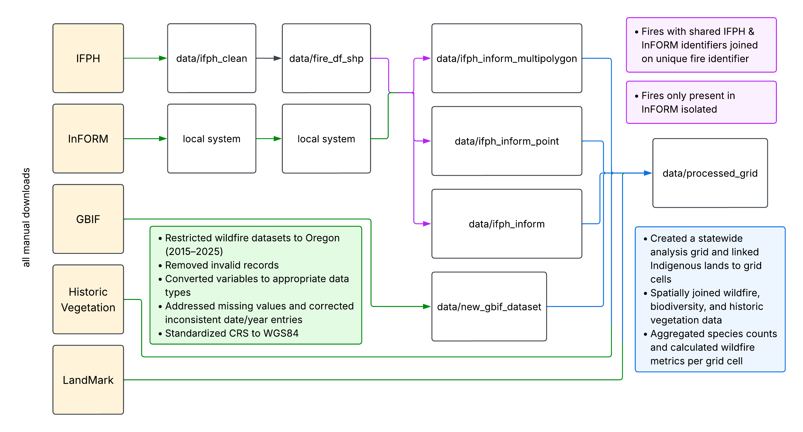
6.2.1 Data Cleaning and Quality Assurance
6.2.2 Spatial Integration and Feature Engineering
| GBIF Species Common Name | Oregon Historic Vegetation Region(s) | Number of Cells with Designation |
|---|---|---|
| Ponderosa Pine | Ponderosa pine, Ponderosa Pine-Lodgepole Pine, Douglas Fir-Ponderosa Pine | 3,431 |
| Scouler’s Willow | Willows | 516 |
| Oregon White Oak | White Oak Woodland, White Oak-Black Oak | 804 |
| Black Cottonwood | Black Cottonwood Riparian Woodland | 565 |
| Western Redcedar | Western Redcedar | 654 |
| Beargrass | N/A | 432 |
| California Blackberry | N/A | 932 |
| No plants recorded | N/A | 5,180 |
7 Ethics and Responsible Use
7.1 LandMark
7.2 Global Biodiversity Information Facility (GBIF)
7.3 NIFC InFORM Fire Occurrence Data Records
7.4 NIFC Interagency Wildland Fire Perimeter History
7.5 Oregon Historic Vegetation
8 Methods and Evaluation
8.1 Research Question 1
8.1.1 Methods
8.1.2 Evaluation
8.2 Research Question 2
8.2.1 Methods
8.2.2 Evaluation
8.3 Research Question 3
8.3.1 Methods
| Fire Size Category | Acres Burned |
|---|---|
| Small | X ≤ 0.1 |
| Medium | 0.1 < X ≤ 4.72 |
| Large | > 4.72 |
8.3.2 Evaluation
9 Results and Visualizations
9.1 Research Question 1
9.1.1 Species-Level Comparisons
| Plant Species | Mean Species Abundance (Non-Indigenous) | Mean Species Abundance (Indigenous) | Welch’s t-test p-values | Mann-Whiteney U p-values |
|---|---|---|---|---|
| Ponderosa Pine | 1.20487854 | 1.2257143 | 9.450517e-01 | 0.0001186367 |
| Scouler’s Willow | 0.05751857 | 0.0400000 | 1.785742e-01 | 0.1699796488 |
| Oregon White Oak | 0.43896808 | 0.4000000 | 7.547603e-01 | 0.8492149566 |
| Black Cottonwood | 0.16181490 | 0.1171429 | 4.764685e-01 | 0.9087538262 |
| Western Redcedar | 0.34661715 | 0.0400000 | 7.552007e-07 | 0.0109302547 |
| Beargrass | 0.17165228 | 0.1171429 | 1.510516e-01 | 0.3628868174 |
| California Blackberry | 0.35555109 | 0.1657143 | 2.297990e-05 | 0.8777980018 |
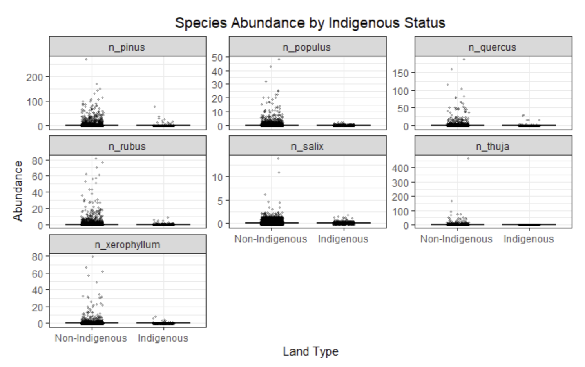
9.1.2 Shannon Diversity
9.1.3 Model Validation
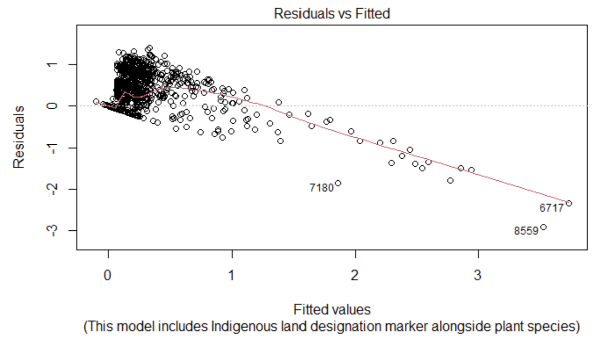
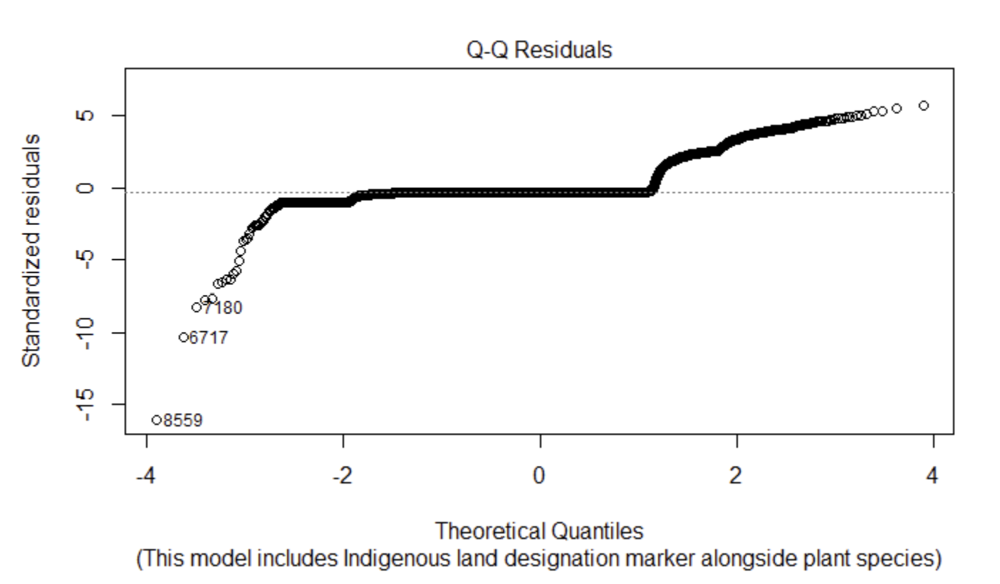
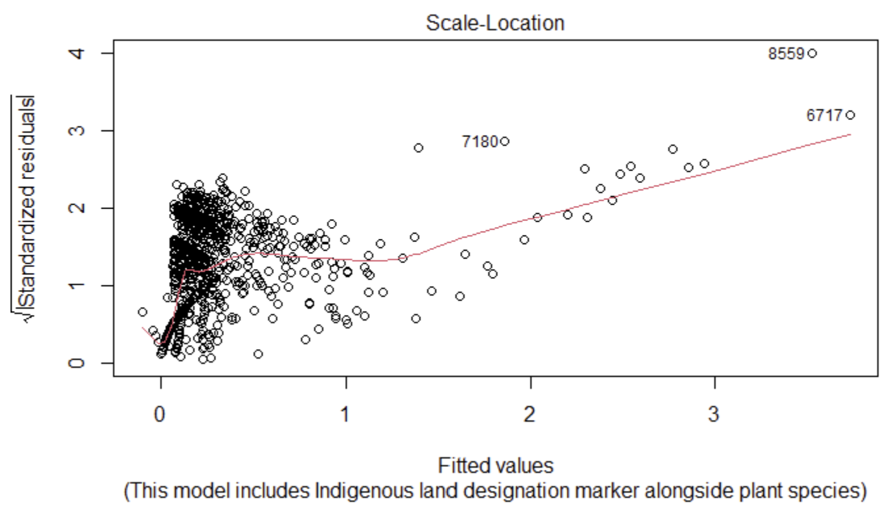
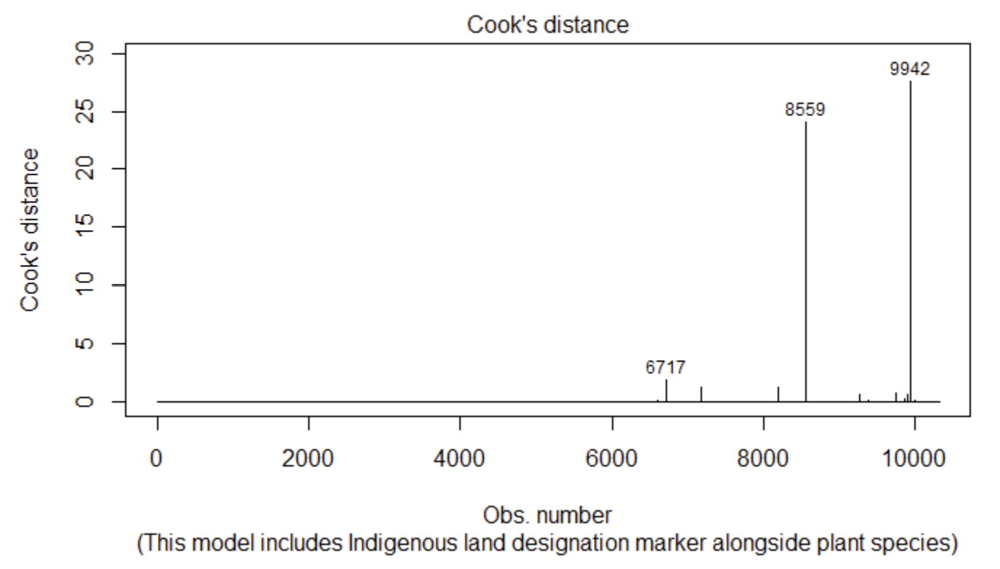
9.2 Research Question 2
9.2.1 Maximum Acres Burned Across Indigenous Land Categories
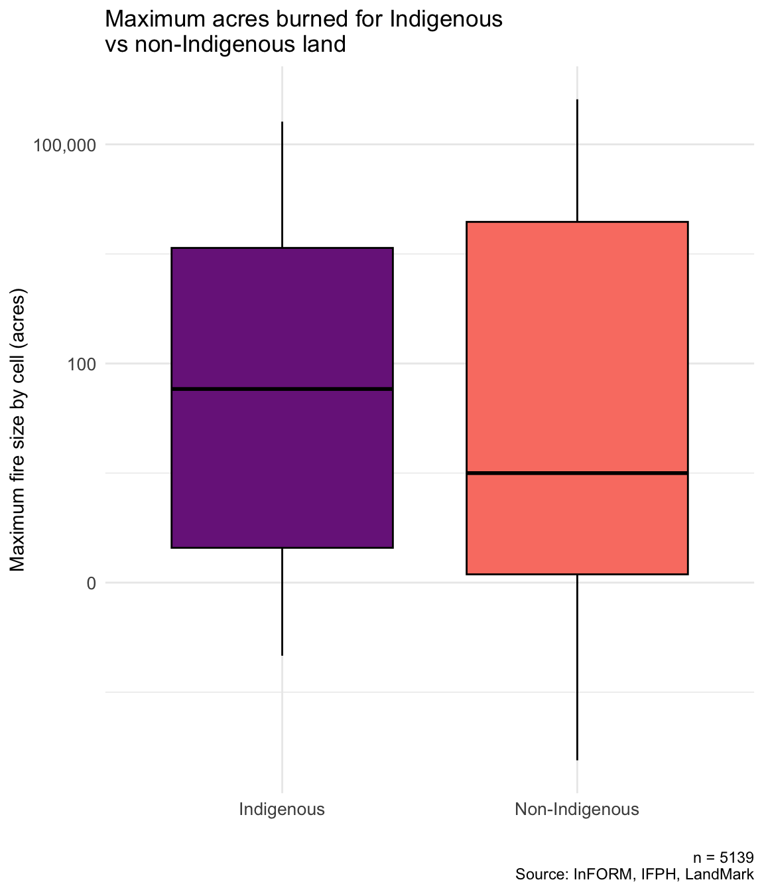
| Indigenous Status | Number of Cells |
|---|---|
| Non-Indigenous | 4913 |
| Indigenous | 226 |
9.2.2 Maximum Fire Duration Across Indigenous Land Categories
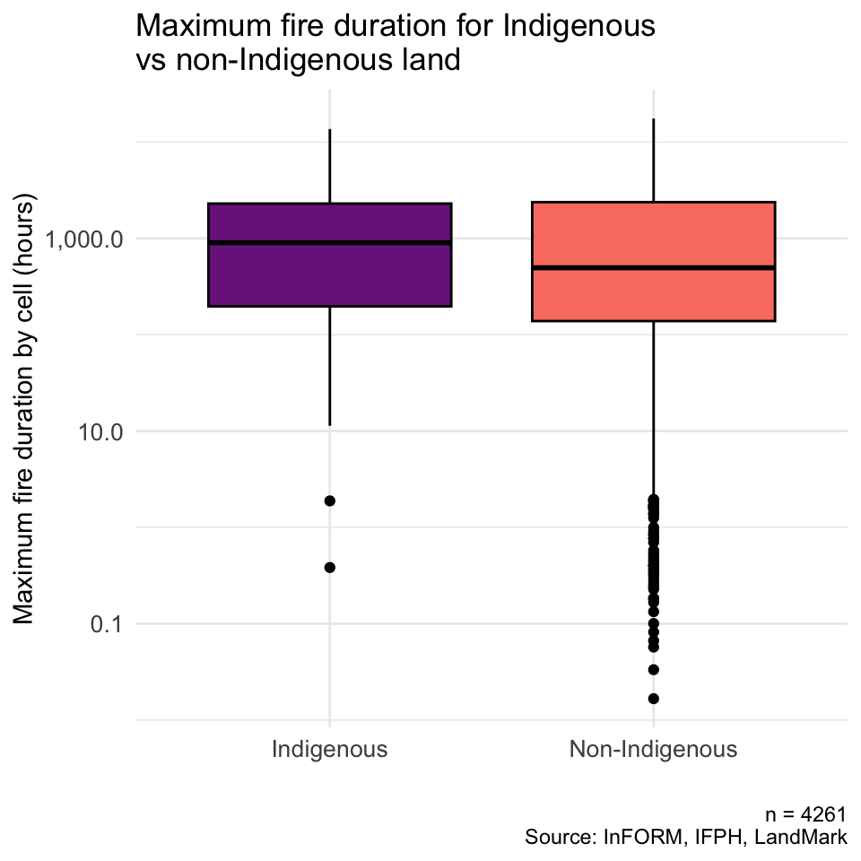
| Indigenous Status | Number of Cells |
|---|---|
| Non-Indigenous | 4100 |
| Indigenous | 161 |
9.3 Research Question 3
9.3.1 Maximum Acreage Comparisons

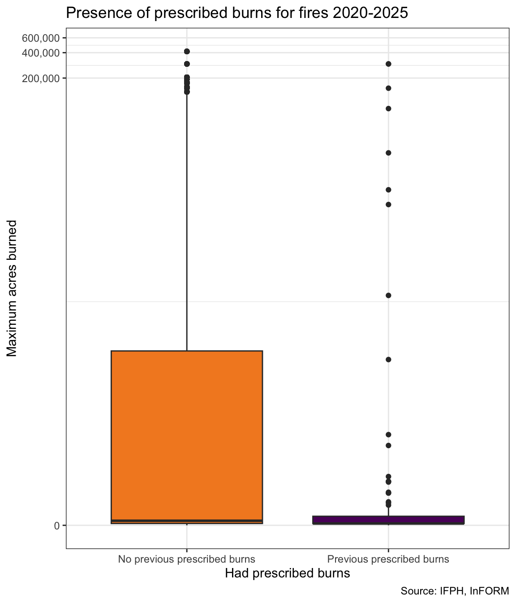
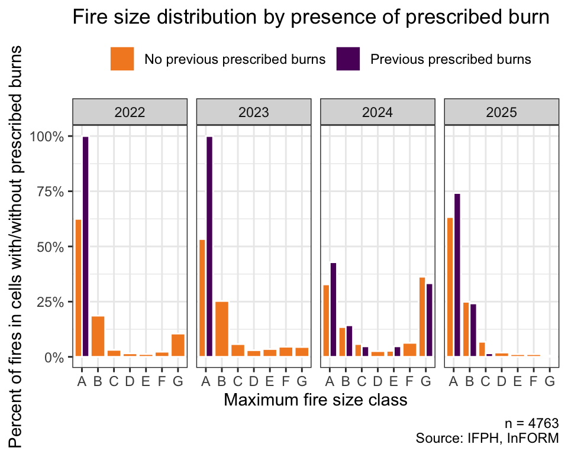
| Fire Class Category | Acres Burned |
|---|---|
| Class A | ≤ 0.25 acres |
| Class B | 0.25 < X ≤ 10 acres |
| Class C | 10 ≤ X < 100 acres |
| Class D | 100 ≤ X < 300 acres |
| Class E | 300 ≤ X < 1,000 acres |
| Class F | 1,000 ≤ X < 5,000 acres |
| Class G | ≥ 5,000 acres |
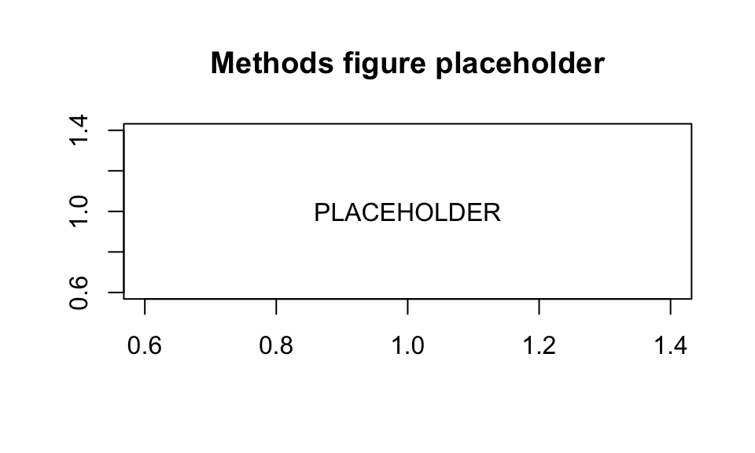
9.3.2 Modeling
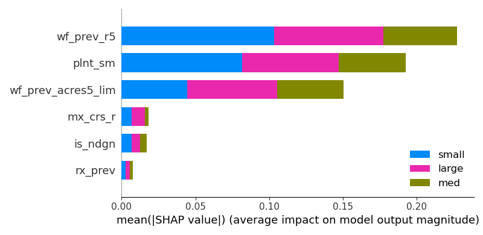
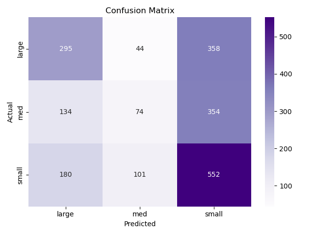
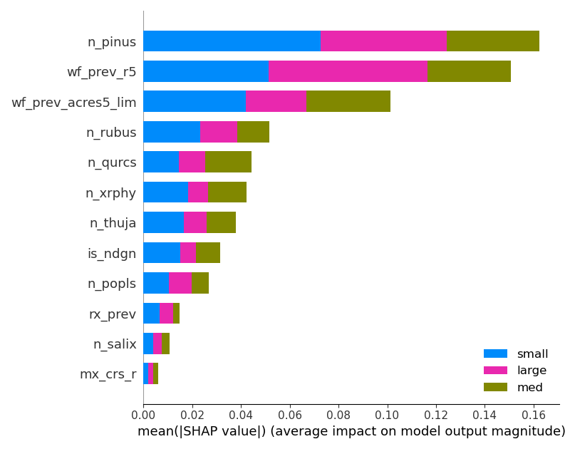
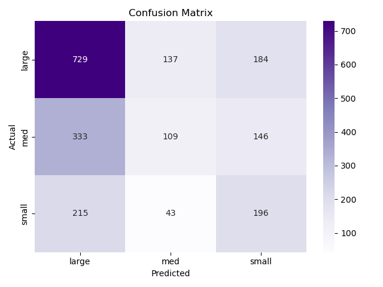
10 Discussion, Limitations, and Future Work
10.1 Discussion
10.2 Limitations
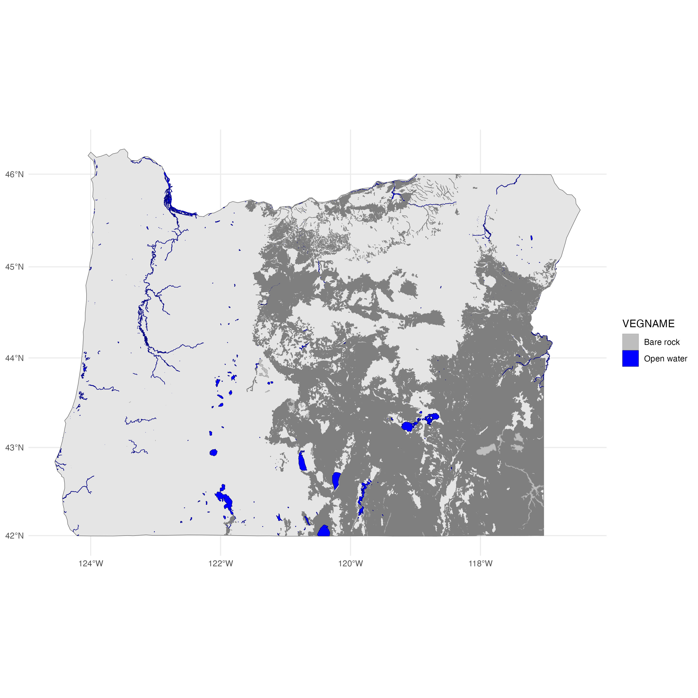
10.3 Future Work
11 Conclusions and Recommendations
12 Reproducibility and References
Reproduce main results:
cd your-repo
quarto render deliverables/M4-writeup-draft/writeup.qmd13 References
Abatzoglou, J. T., and A. P. Willams. 2016. “Impact of Anthropogenic Climate Change on Wildfire Across Western US Forests | Pnas.” Proceedings of the National Academy of Sciences of the United States of America. https://www.pnas.org/doi/10.1073/pnas.1607171113.
“Black Cottonwood.” 2019. College of Agricultural Sciences, September 20. https://horticulture.oregonstate.edu/oregon-vegetables/black-cottonwood#.
Coughlan, M. R., J. D. Johnston, K. M. Derr, D. G. Lewis, and B. R. Johnson. 2024. “Pre-Contact Indigenous Fire Stewardship: A Research Framework and Application to a Pacific Northwest Temperate Rainforest.” Front. Environ. Archaeol., ahead of print. https://doi.org/10.3389/fearc.2024.1347571.
Coughlan, M., N. Serio, H. Loeb, D. Lewis, and S. Thompson. 2023. “Indigenous Fire Stewardship for Fire Management and Ecological Restoration in the Pacific Northwest Ecosystem Workforce Program.” Northwest Fire Science Consortium. https://www.nwfirescience.org/sites/default/files/publications/SynthesisReport_IFS_Full_Accessible_oct30.pdf.
Fryer, J. L. n.d. “Pinus Ponderosa Var. Benthamiana, p. Ponderosa Var. Ponderosa, Pacific Ponderosa Pine, Columbia Ponderosa Pine.” US Forest Service Research and Development. https://research.fs.usda.gov/feis/species-reviews/pinponp.
GBIF Occurrence Download. 2026. GBIF.org. https://doi.org/10.15468/dl.a9m8pz.
Gleason, S. 2025. “Tribes Lead the Way in Forest Resilience.” The Washington State Standard. https://washingtonstatestandard.com/2025/09/25/tribes-lead-the-way-in-forest-resilience/.
Gucker, C. 2007. “Quercus Garryana, Oregon White Oak.” US Forest Service Research and Development. https://research.fs.usda.gov/feis/species-reviews/quegar.
Hessburg, P. F., S. J. Prichard, K. Hagmann, N. Povak, and F. K. Lake. 2021. “Wildfire and Climate Change Adaptation of Western North American Forests: A Case for Intentional Management - Hessburg - 2021 - Ecological Applications - Wiley Online Library.” Forest Service U.S. Department of Agriculture, ahead of print. https://doi.org/10.1002/eap.2432.
Historic Vegetation [Data Set]. 2023. In GeoHub Data. State of Oregon. https://geohub.oregon.gov/datasets/oregon-geo::historic-vegetation/about.
Indigenous Peoples’ and Local Community Lands and Territories [Data Set]. 2026. LandMark: The Global Platform of Indigenous; Community Lands. https://landmarkmap.org/data-methods/access-data.
InFORM Fire Occurrence Data Records [Data Set]. 2025. National Interagency Fire Center. https://data-nifc.opendata.arcgis.com/datasets/nifc::inform-fire-occurrence-data-records/about.
InterAgencyFirePerimeterHistory AllYears View [Data Set]. 2025. National Interagency Fire Center. https://data-nifc.opendata.arcgis.com/datasets/nifc::interagencyfireperimeterhistory-allyears-view/about.
Lundeberg, S. 2026. “Study: Old-Growth Forests Face Highest Wildfire Risk in Areas That Once Burned Frequently.” Philomath News, Oregon State University. https://philomathnews.com/study-old-growth-forests-face-highest-wildfire-risk-in-areas-that-once-burned-frequently/.
Perreault, M. L., and L. D. Goodridge. 2025. “Indigenous Data Protection in Wastewater Surveillance: Balancing Public Health Monitoring with Privacy Rights.” Genomic Psychiatry, 22–27. https://doi.org/10.61373/gp025p.0008.
Size Class of Fire. n.d. National Wildfire Coordinating Groups. https://www.nwcg.gov/node/1737420.
Tallamy, D. 2024. “Keystone Native Plants: Marine West Coast Forests - Ecoregion 7.” National Wildlife Federation. https://www.nwf.org/-/media/Documents/PDFs/Garden-for-Wildlife/Keystone-Plants/NWF-GFW-keystone-plant-list-ecoregion-7-marine-west-coast-forest.pdf.
The Owl Ridge Trails Report. 2008. Oregon Websites; Watersheds Project. http://www.orww.org/Reports/Owl_Ridge_Trails/Part_5-6_Plants-Animals.pdf.
“Western Redcedar Dieback.” n.d. WSU Urban Forest Health Lab. https://treehealth.wsu.edu/redcedar-dieback/.